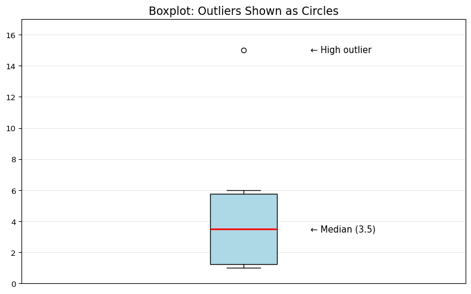

sample_data = [1, 2, 6, 5, 1]
sample_woutlier = [1, 2, 6, 5, 1, 15]Measures of Spread, Spotting Outliers
A second and final statistical measure we’ll discuss today is spread. Just as it sounds, measures of spread tell us how spread out our data are. Spread, also referred to as variability, is the backbone of statistics!
To-Do: We need to re-load the class csv data since the webpage doesn’t save things from page-to-page. Please paste the csv link again in the block below and run it.
Two Measures of Spread
Today, we’ll discuss two measures of spread: the range and the standard deviation.
Range
The range is a fairly simple calculation. It’s the biggest number minus the smallest number. Or, put differently, the maximum minus the minimum in a dataset.
max() - min()
Here is an example of finding the range using our sample dataset:
YOUR TURN: Find the range of the class nitrate and class nitrate data! Fill in the ??? with the appropriate object name and run the block.
Standard Deviation
The standard deviation tells us how spread out the numbers are from the mean. Put diffently, it tells us the average distance the data in the dataset is from the mean. The formula looks a bit technical:
\(\Large \sqrt{\frac{\sum (x - \bar{x})^2}{n}}\)
Here is an example of calculating the standard deviation using our sample dataset:
YOUR TURN: Find the standard deviation of the class nitrate and class nitrite data! Fill in the ??? with the appropriate object name and run the block.
What Could Cause High Variability?
If a creek’s reading has high standard deviation (lots of variability in comparison to other creeks), it might mean:
- Pollution events - A factory dumps waste occasionally
- Storm runoff - Rain washes fertilizer from farms into the creek
- Natural cycles - Some creeks naturally vary
- Sensor problems - The equipment might need calibration
- Different sampling times - Morning vs afternoon can be different
It might also signal that your data has one or more outliers.
What Are Outliers?
Outliers are data points that are very different from the rest of your data. They’re the “weird” numbers that don’t fit the pattern. Outliers can really change your statistics—like mean and standard deviation.
That 15 is an outlier! It’s way higher than everything else.
Why Do Outliers Happen?
Outliers can happen for different reasons:
- Sensor Malfunction 🔧
- The sensor glitched or needs calibration
- Battery was dying
- Sensor got knocked around
- Real Pollution Event 🚨
- Factory dumped chemicals into the stream
- Farm fertilizer washed in after a storm
- Sewage spill
- Natural Event 🌧️
- Heavy rain changed water chemistry
- Algae bloom
- Seasonal variation
Your job as a scientist: Figure out which reason it is!
Visualizing Outliers
We can also use a box plot to visualize outliers automatically! It’s like a detective tool for finding weird data. Here is a boxplot of our sample data with the outlier added:
import matplotlib.pyplot as plt
import numpy as np
plt.figure(figsize=(10, 6))
plt.boxplot(sample_woutlier, vert=True, patch_artist=True,
boxprops=dict(facecolor='lightblue'),
medianprops=dict(color='red', linewidth=2))
plt.title('Boxplot: Outliers Shown as Circles', fontsize=14)
plt.grid(True, alpha=0.3, axis='y')
plt.ylim(0, 17)
plt.xticks([])
plt.text(1.15, 15, '← High outlier', fontsize=11, va='center')
plt.text(1.15, np.median(sample_woutlier), f'← Median ({np.median(sample_woutlier)})', fontsize=11, va='center')
print("The circle shows the outlier!")
print("The box shows where most of the other data is.")The circle shows the outlier!
The box shows where most of the other data is.
Reading a box plot:
- The line in the middle = Median
- The box = Where the middle 50% of data is
- The whiskers (lines extending out) = Normal range
- The circles = Outliers!
Your Turn: Create a Boxplot for the Class Data
Class Nitrate Boxplot
Class Nitrite Boxplot
Do either have outliers? How do you know?
Takeaways When Encountering an Outlier
When you find an outlier, investigate it:
- Is it possible? (nitrate concentration of 100 mg/L = unlikely)
- What happened that day? (Check notes, weather, etc.)
- Does it fit a pattern? (One spike vs multiple high readings)
- Is the sensor/buoy/test strip working? (Check calibration, battery)